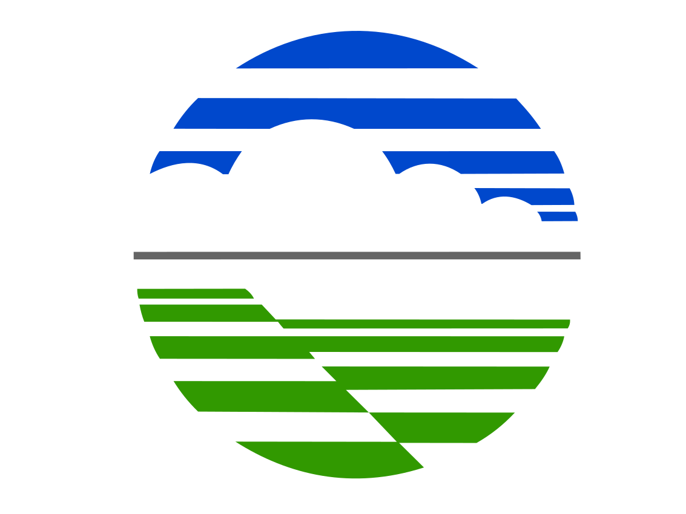

<!DOCTYPE html>
<html>
    <head>
    <title>Pelayanan Jasa dan Informasi Petir</title>
    <meta charset="utf-8" />
    <meta name="viewport" content="width=device-width, initial-scale=1.0">

    <link rel="stylesheet" href="https://unpkg.com/leaflet@1.3.4/dist/leaflet.css" integrity="sha512-puBpdR0798OZvTTbP4A8Ix/l+A4dHDD0DGqYW6RQ+9jxkRFclaxxQb/SJAWZfWAkuyeQUytO7+7N4QKrDh+drA==" crossorigin=""/>
    <script src="https://unpkg.com/leaflet@1.3.4/dist/leaflet.js" integrity="sha512-nMMmRyTVoLYqjP9hrbed9S+FzjZHW5gY1TWCHA5ckwXZBadntCNs8kEqAWdrb9O7rxbCaA4lKTIWjDXZxflOcA==" crossorigin=""></script>

    <!-- EDIT HERE -->
    <link rel="shortcut icon" type="image/x-icon" href="img/logo_bmkg.png" />
    <link href="css/mapbox.css" rel="stylesheet" />

    <link rel="stylesheet" href="css/style.css" />
    <link rel="stylesheet" href="css/L.Control.BetterScale.css" />              <!-- https://github.com/daniellsu/leaflet-betterscale/blob/master/L.Control.BetterScale.css -->
    <link rel="stylesheet" href="css/L.SimpleGraticule.css" />                  <!-- https://github.com/ablakey/Leaflet.SimpleGraticule/blob/master/L.SimpleGraticule.css -->
    <link rel="stylesheet" href="css/jquery-ui.css" />                          <!-- https://code.jquery.com/ui/1.9.2/themes/base/jquery-ui.css -->
    <link rel="stylesheet" href="css/Control.MiniMap.css" />                    <!-- http://norkart.github.io/Leaflet-MiniMap/Control.MiniMap.css -->

<!--     <link href='https://fonts.googleapis.com/css?family=Lato:900,300' rel='stylesheet' type='text/css' /> -->
<!--     <link href="https://maxcdn.bootstrapcdn.com/font-awesome/4.1.0/css/font-awesome.min.css" rel="stylesheet" /> -->
    
    </head>
    <script src='lib/L.Control.BetterScale.js'></script>                        <!-- https://github.com/daniellsu/leaflet-betterscale/blob/master/L.Control.BetterScale.js -->
    <script src='lib/Leaflet.Graticule.js'></script>                            <!-- https://github.com/srappel/TemplateGraticuleLeafletPages/blob/master/graticule%20template/Leaflet.Graticule.js -->
    <script src='lib/jquery-1.9.1.min.js'></script>                             <!-- https://code.jquery.com/jquery-1.9.1.min.js -->
    <script src='lib/jquery-ui.js'></script>                                    <!-- https://code.jquery.com/ui/1.9.2/jquery-ui.js -->
    <script src='lib/jquery.ui.touch-punch.min.js'></script>                    <!-- https://cdnjs.cloudflare.com/ajax/libs/jqueryui-touch-punch/0.2.2/jquery.ui.touch-punch.min.js -->
    <script src='lib/SliderControl.js'></script>                                <!-- https://rawgit.com/dwilhelm89/LeafletSlider/master/SliderControl.js -->
    <script src='lib/Control.MiniMap.js'></script>                              <!-- http://norkart.github.io/Leaflet-MiniMap/Control.MiniMap.js -->
    <script src='lib/moment-with-locales.js'></script>                          <!-- https://momentjs.com/downloads/moment-with-locales.min.js -->
    <script src='lib/bundle.js'></script>                                       <!-- http://rowanwins.github.io/leaflet-easyPrint/dist/bundle.js -->
	
    <body style="background: rgba(0, 0, 0, 0.5);">

        <div id="my-map" style="width:2245px;height:1565px;border:4px solid black;box-sizing: border-box;" ></div>

		<script>
                    
            var sliderControl = null;

            // PETA UTAMA
            //var map = new L.Map('my-map', { zoomControl:false });
            //var osmUrl='https://korona.geog.uni-heidelberg.de/tiles/roads/x={x}&y={y}&z={z}';
			var osmUrl='https://{s}.tile.openstreetmap.org/{z}/{x}/{y}.png';
            var osmAttrib='Lightning Data by Stasiun Geofisika Tuntungan <a href="http://bmkg.go.id">BMKG</a>';
            var osm = new L.TileLayer(osmUrl, {minZoom: 5, maxZoom: 18, attribution: osmAttrib});

            // LOKASI TOWER
            var towerIcon = L.icon({
                iconUrl: 'img/tower.svg',
                iconSize:     [76, 190], // size of the icon
            });

            //remember last position
            var rememberLat = window.parent.document.getElementById('latitude').value;
            var rememberLong = window.parent.document.getElementById('longitude').value;
            if( !rememberLat || !rememberLong ) { rememberLat = 3.5012; rememberLong = 98.5625;}
            var map = new L.Map('my-map', {
                'center': [rememberLat, rememberLong],
                'zoom': 11,
                'layers': [osm],
                'zoomControl': false
            });
            var marker = L.marker([rememberLat, rememberLong], {icon: towerIcon}, {
                draggable: false
            }).addTo(map);

            function updateLatLng(lat,lng,reverse) {
                if(reverse) {
                    marker.setLatLng([lat,lng]);
                    map.panTo([lat,lng]);
                } else {
                    window.parent.document.getElementById('latitude').value = marker.getLatLng().lat;
                    window.parent.document.getElementById('longitude').value = marker.getLatLng().lng;
                    map.panTo([lat,lng]);
                }
            }

            //BACA DATA PETIR
            var markersLayer = new L.LayerGroup();
            var sliderControl = L.control.sliderControl();

            function updateData() {
                map.removeLayer(markersLayer);
                markersLayer.clearLayers();

               // map.removeControl(sliderControl);
                tanggal=moment(window.parent.document.getElementById('tanggal').value).format('YYYYMMDD');
                bujur=window.parent.document.getElementById('longitude').value;
				lintang=window.parent.document.getElementById('latitude').value;
                jam_awal=window.parent.document.getElementById('jam_awal').value;
				jam_akhir=window.parent.document.getElementById('jam_akhir').value;
                $.ajax({
                    type: 'POST',
                    url: 'script/script.php',                
                    data: ({tanggal:tanggal,
						bujur:bujur,
						lintang:lintang,
						jam_awal:jam_awal,
						jam_akhir:jam_akhir}),
                    success: function(data) {
                    }  
                });

                var delayInMilliseconds = 4000;
                var dt = new Date();
				
                setTimeout(function(){
                    $.getJSON('data/petir.geojson?a='+dt.getTime(), function(data) {
                        
                        var CGP = L.icon({
                            iconSize: [50, 50],
                            iconUrl: 'img/lightning.svg'
                        });
                        var CGN = L.icon({
                            iconSize: [50, 50],
                            iconUrl: 'img/lightning.svg'
                        });
                        var IC = L.icon({
                            iconSize: [50, 50],
                            iconUrl: 'img/lightning.svg'
                        }); 
                    
                        delete geojson;
                        geojson = L.geoJson(data, {
                            pointToLayer: function(feature, latlng) {
                            if (feature.properties.type === 0) {
                                return L.marker(latlng, {icon: CGP});
                            } else {
                                return L.marker(latlng, {icon: CGN});
                                }
                            },
                        });

                        geojson.addTo(markersLayer);
                        
                        markersLayer.addTo(map);

                        //TIME SLIDER
                        var sliderControl = L.control.sliderControl({
                            position: "topright",
                            layer: geojson,
                            range: true
                        });
                        //var keys = Object.keys(markersLayer);
            //                var seen = [];
            //
            //                console.log(JSON.stringify(markersLayer, function(key, val) {
            //                   if (val != null && typeof val == "object") {
            //                        if (seen.indexOf(val) >= 0) {
            //                            return;
            //                        }
            //                        seen.push(val);
            //                    }
            //                    return val;
            //                }));

                        //console.log(sliderControl.options);
                        //Make sure to add the slider to the map ;-)

            //            map.addControl(sliderControl);
                        //An initialize the slider
            //            sliderControl.startSlider();
                        
                        // map.hideControl(sliderControl );
                    });
                }, delayInMilliseconds); 
            };
            
            //GRID KOORDINAT
            var options = {showOriginLabel: true,
                redraw: 'moveend',
                zoomInterval: [
                    {start: 0, end: 3, interval: 50},
                    {start: 4, end: 6, interval: 5},
                    {start: 7, end: 8, interval: 3},
                    {start: 9, end: 10, interval: 0.5},
                    {start: 11, end: 11, interval: 0.25},
                    {start: 12, end: 12, interval: 0.125},
                    {start: 13, end: 14, interval: 0.05},
                    {start: 15, end: 16, interval: 0.0125},
                    {start: 17, end: 20, interval: 0.005}
                ]};
            L.latlngGraticule(options).addTo(map);

            //SKALA PETA
            L.control.betterscale({maxWidth: 600, metric: true, imperial: false}).addTo(map);

            //LEGENDA
            var legend = L.control({position: 'bottomright'});

            legend.onAdd = function (map) {
                var div = L.DomUtil.create('div', 'info legend');
                div.innerHTML = ('<i style="background:"></i> ' + '<br>'+'' +'<br>'+
                    '<h3 style="font-size:30px">Dibuat oleh :</h3><br>' + '<h3 style="font-size:30px">Stasiun Geofisika Tuntungan</h3><br>' + '<h3 style="font-size:30px">BMKG</h3><br>' );
                return div;
            };

            legend.addTo(map);

            //PETA INSET
            var osm2 = new L.TileLayer(osmUrl, {minZoom: 0, maxZoom: 13, attribution: osmAttrib });
            var miniMap = new L.Control.MiniMap(osm2, { toggleDisplay: false, width: 528, height: 528}).addTo(map);

            //LEGENDA
            var legend2 = L.control({position: 'bottomright'});

            legend2.onAdd = function (map) {
                var div2 = L.DomUtil.create('div', 'info legend');
                div2.innerHTML = ('<i style="background:"></i> ' + '<h3 style="font-size:35px">LEGENDA</h3><br>' +
                    '<h3 style="font-size:30px"> Sambaran Petir</h3><br>' +
                    '<h3 style="font-size:30px"> Lokasi Site</h3><br>' );
                return div2;
            };
            legend2.addTo(map);

            //TITLE
            var legend5 = L.control({position: 'topleft'});
            var sitechg = false;
            var datechg = false;

            moment.locale('id');
            function updateSite(){
                if (sitechg == true || datechg == true) {
                    legend5.remove(map);
                    sitechg = false;
                    datechg = false;
                }
                nameSite=window.parent.document.getElementById('site').value.toUpperCase();
                inputTanggal=moment(window.parent.document.getElementById('tanggal').value).format('DD MMMM YYYY').toUpperCase();

                var legend3 = L.control({position: 'topleft'});
                legend3.onAdd = function (map) {
                    var div3 = L.DomUtil.create('div', 'judul');
                    div3.innerHTML = ('<div class="title">' +'<br><br>'+ '<p style="font-size:35px">PETA SAMBARAN PETIR TANGGAL ' + inputTanggal +
                        '</p><br>'+'<p style="font-size:35px">DI SEKITAR WILAYAH SITE ' + nameSite + '</p>' +'<br>'+'</div> ' );
                    return div3;
                };
                if (sitechg == false || datechg == false) {
                   legend5 = legend3;
                   sitechg = true;
                   datechg = true
                }
                legend5.addTo(map);
            }
                
            //MATA ANGIN
            var legend4 = L.control({position: 'bottomleft'});

            legend4.onAdd = function (map) {
            var div4 = L.DomUtil.create('div');
                div4.innerHTML = ('<div>'+''+'</div> ' );
                return div4;
            };
            legend4.addTo(map);

            //CETAK PETA
            var printer = L.easyPrint({
                tileLayer: osm,
                exportOnly: true,
                hideControlContainer: false,
                position: 'bottomleft',
                hidden: true
            }).addTo(map);

            function manualPrint () {
                printer.printMap('CurrentSize', 'Peta Petir')
            }
			
            </script>
    </body>
</html>